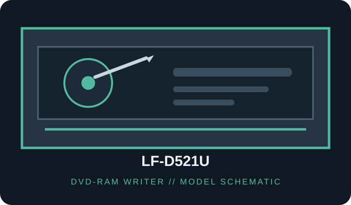

[ DVD-RAM WRITERS // IDENTIFIED MODEL ]
Panasonic LF-D521U
Internal DVD Multi Drive with DVD-RAM read/write support. Speeds are model ratings, not guaranteed sustained transfer rates; media version, condition and mode affect operation.

IDENTIFICATION: Match the full label and firmware to the manufacturer documentation; do not infer support from a similar Panasonic drive or OEM suffix.
Documented specifications
| Catalog subcategory | DVD-RAM writers |
|---|---|
| Exact model / SKU | Panasonic LF-D521U |
| Supported media formats | DVD-RAM (supported cartridge/bare-disc types per manual), DVD-R, DVD-ROM/DVD-Video, CD-ROM, CD-R and CD-RW. Check media tables before use. |
| Rated read speeds | DVD-RAM up to 2×; DVD-ROM up to 12×; CD-ROM up to 32×. |
| Rated write speeds | DVD-RAM up to 2×; DVD-R up to 2×; CD-R and CD-RW speed limits vary by media; refer to the model manual. |
| DVD-RAM capability | Reads and writes DVD-RAM up to 2×. |
| Interface / bay | Internal 5.25-inch desktop drive; ATAPI / IDE (PATA). |
| Host compatibility | Requires an internal 5.25-inch bay, 40-pin IDE/ATAPI host channel/cable and peripheral power. Host firmware and optical-drive software are required; the original documentation targets legacy Windows systems. DVD-RAM packet writing/UDF depends on compatible host software. |
| Model distinction | LF-D521U is a specific DVD Multi Drive SKU; verify the U suffix and cartridge/media compatibility from its manual. |
Host compatibility and use notes
- Configure the IDE device jumper to match the host channel and connect the correct power cable.
- Use only DVD-RAM cartridge and disc types supported by the LF-D521U manual; a DVD-RAM logo alone does not prove cartridge compatibility.
- DVD-RAM hardware write support does not provide filesystem mounting or packet-writing software by itself; verify host OS/UDF support.
- For preservation work, record exact model/firmware, media version, host software, write mode and verification results; retain checksums and error logs.
Protect discs from heat, sunlight, scratches and contamination. Test each media batch and retain more than one verified copy.
Sources
- Panasonic LF-D521U manufacturer documentationManufacturer-hosted operating instructions and product-specific support for the model family.
- Panasonic LF-D521U operating instructionsModel-labelled manual with installation and supported-media specifications.
- Panasonic LF-D521 manual archival copyArchived copy of the LF-D521 operating instructions for source preservation.